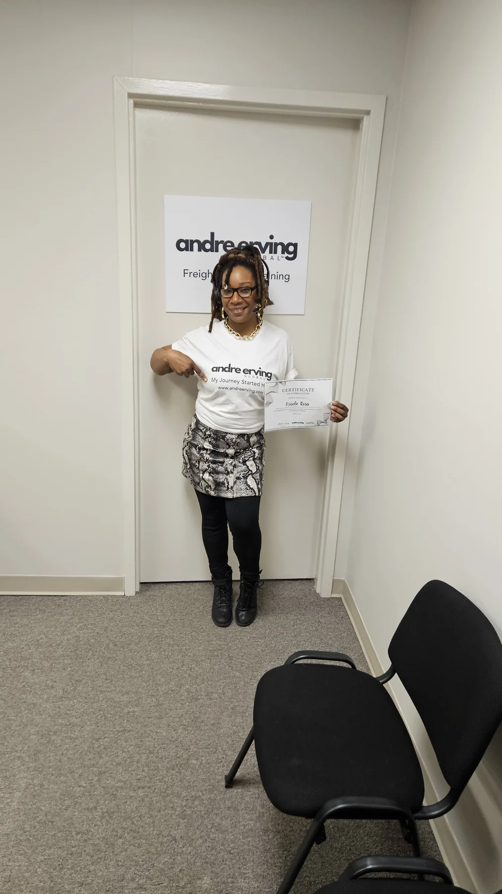

DOT agencies & testing
Understand the DOT testing framework, regulated agencies, testing reasons, and laboratory concepts.
Build procedural confidence around DOT urine specimen collection, chain of custody, site security, problem collections, and mock collection practice.

Specimen collection is a procedural role. The training emphasizes sequence, documentation, security, donor instructions, and how to respond when a collection does not go as expected.
Organized around the decisions, documents, workflows, and operating knowledge you will actually use.
Understand the DOT testing framework, regulated agencies, testing reasons, and laboratory concepts.
Learn who may collect, collector responsibilities, employer responsibilities, and restrictions.
Set up a secure collection environment with appropriate privacy, controls, and supplies.
Practice the correct information flow and distribution of the federal CCF.
Follow donor instructions, specimen inspection, split preparation, sealing, and shipment procedures.
Understand when special collection procedures apply and what documentation is required.
Learn the required process, timing, donor instructions, and documentation.
Respond to temperature issues, adulteration or substitution concerns, and related documentation.
Identify correctable flaws, fatal flaws, refusal situations, and unusual collection events.
Understand how non-regulated collections differ and how to keep workflows distinct.
Checkout remains on the current AndreErving.com store while the new website is being deployed.
Core urine specimen collector training.
Collector training plus hair collection instruction.
Expanded instructor-focused program.
Course details can change as training is updated. Confirm current access terms during checkout.
Yes. The current training includes mock collection practice as part of the qualification process.
The current program references collection kits, federal Custody and Control Forms, and disposable gloves for mock collections.
No. Collectors should always work from current DOT requirements and employer or program procedures. Training materials should be refreshed when regulations change.
Use the course to organize what you know, see what you are missing, and move into implementation.